全景点选 + 就地换肤
元梦之星 · 方案 B
DREAM FARM / PLAN B
从农场全景直接选择部件，围绕就地编辑、保存应用与异常边界组织操作。
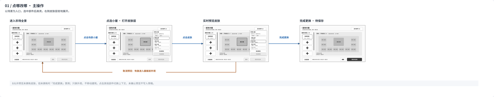
01 / 点哪改哪 · 主操作
02 / 保存与应用
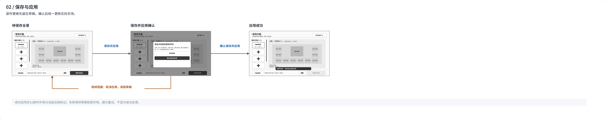
03 / 新建与名额
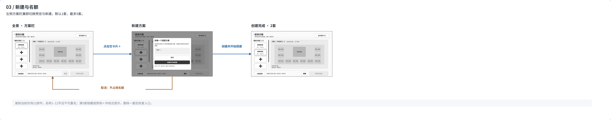
04 / 未保存切换与离开
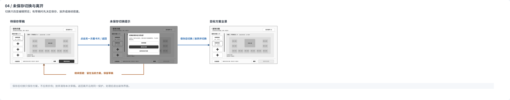
05 / 重置本次改造
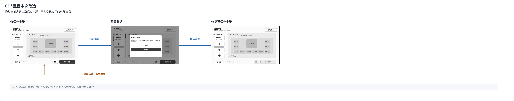
06 / 重命名
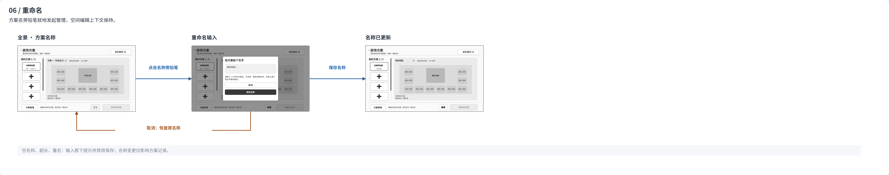
07 / 删除与最后1套
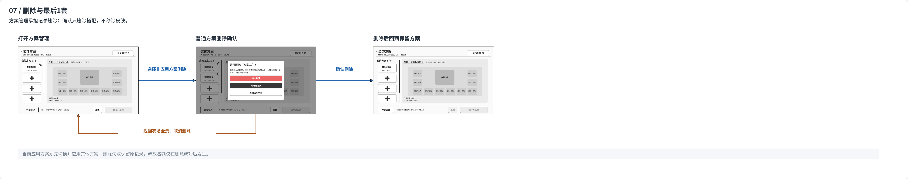
08 / 最后一套保护
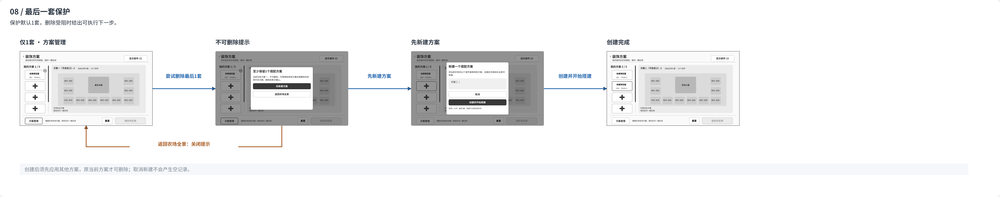
09 / 部件发现与可点击提示
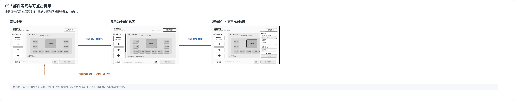
10 / 应用异常与取消
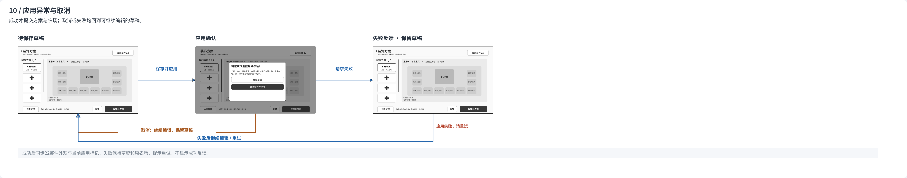
11 / 删除当前应用方案
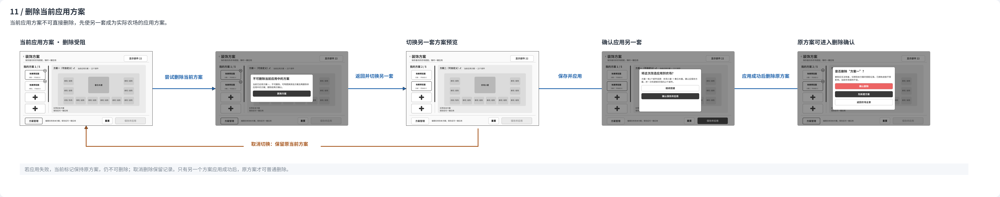